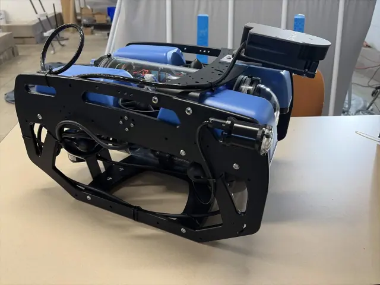
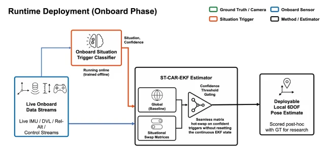
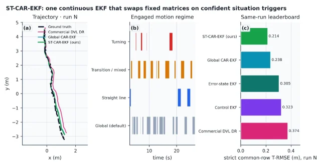
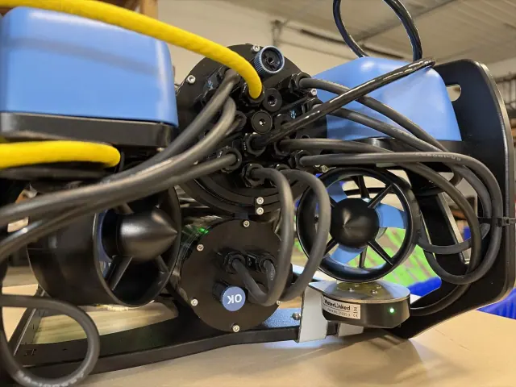

Underwater autonomy / 2026
Adaptive underwater dead reckoning.
Maintaining one continuous state estimate while adapting the filter’s noise model to the motion conditions a BlueROV2 encounters.

Problem
Useful estimates without continuous GPS or vision.
Underwater dead reckoning combines inertial and Doppler velocity measurements when external positioning cannot be assumed. One fixed set of filter parameters may work well in many cases, but it can become poorly matched during turns, motion transitions, or periods of degraded sensing.
The objective is practical adaptation: change how uncertainty is modeled without switching estimators or resetting the state.
Approach
Schedule covariance by detected situation.
The Situation-Triggered Calibrated Adaptive Robust Extended Kalman Filter (ST-CAR-EKF) uses an onboard probabilistic trigger to identify the current motion situation. When the trigger is confident, one continuously running error-state filter selects the corresponding pre-calibrated process- and measurement-noise matrices.
- Fuse Doppler velocity log and inertial measurements for dead reckoning.
- Calibrate motion situations and covariance profiles offline.
- Preserve the state, covariance history, dynamics, and measurement models during scheduling.
- Fix the policy before evaluation on held-out experimental runs.


Contribution
Estimation work inside a broader autonomy program.
My work includes dead-reckoning method development, sensor integration, frame alignment, data collection, and evaluation on BlueROV2 data. I also lead the lab’s broader underwater autonomy work across vision-free localization, sonar-camera mapping, learned perception, and onboard SLAM, coordinating experiments and system integration.
Those broader program areas are ongoing directions and are not presented as results of the ST-CAR-EKF paper.
Evaluation
A fixed policy evaluated on held-out pool runs.
The manuscript separates calibration, validation, and held-out testing. Across four held-out pool runs, the scheduled method improves translation error modestly but consistently relative to the same filter backbone with one global noise profile, while orientation error remains essentially unchanged.
The full manuscript reports metrics, uncertainty intervals, experimental setup, and limitations.


